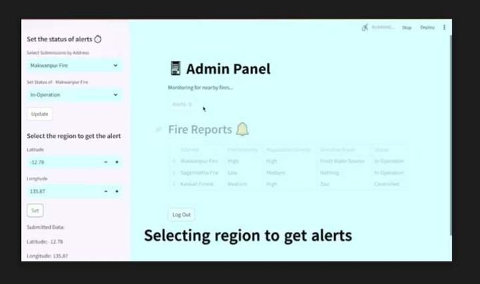
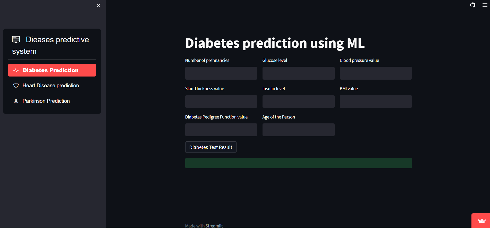
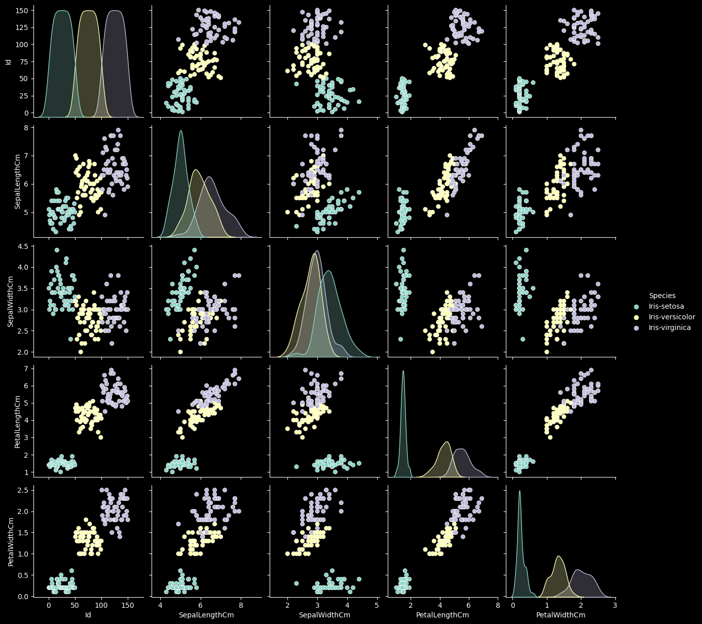

August 20, 2024
BlazeGuards is a high-tech tool(Web app) that helps manage and keep an eye on wildfires
better. This web application integrates NASA's satellite-derived active fire data, employs
computer vision-based fire detection, encourages community involvement, and provides tools for
historical data analysis, all aimed at improving early detection, rapid response, and overall
fire management.


A disease predictive system using machine learning can mainly for diabetes and heart disease
related make existing healthcare tasks easier, safer, and more effective by providing accurate
predictions and personalized recommendations based on individual health data. It has the
potential to revolutionize healthcare by enabling earlier detection, more effective prevention,
and better treatment of diseases.
In this project, I examined dataset that contain Normal Kidney Images and Tumor Kidney Images and
used Deep Learning models .
It is a propject that is divided into three category. Fertilisers Recommendation System
recommends farmers to use certain fertilisers based on different conditions . Crop
Recommendation System recommend farmers to grow certain crops based on different conitions .
Plant Disease Predictions predicts eithers the plant is disease free or not and give the
solution to solve for diseased plants.

In this project, I classified Iris Flower Classification into Iris-setosa , Iris-Versicola and
Iris-Virginica
The model will be capable of predicting
whether a loan application should be approved or rejected, which will help streamline the loan
application process, reduce human error, and minimize the risk of bad loans.

In this project, I used Python libraries like Pandas and NumPy to analyze sales data for various
products available on Amazon.